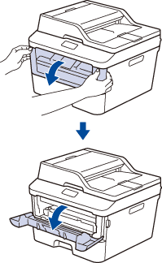
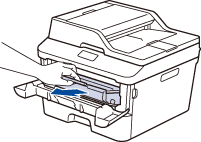
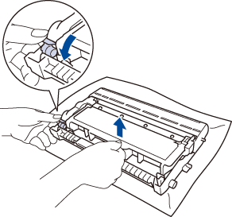
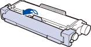
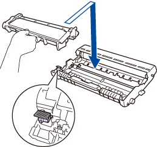
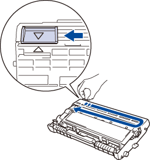
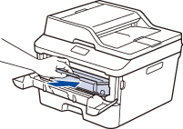

Máy in brother báo Replace Toner
Máy in hiệu Brother có hộp mực riêng biệt và hộp trống hay còn gọi là cụm drum. Trong trường hợp máy in hiện thông báo lỗi “Replace toner” thì bạn chỉ cần thay thế hộp mực hoặc bơm mực vào chứ không liên quan đến cụm drum
>> Xem sự khác biệt giữa cụm drum và cụm mực
Hãy làm theo các thao tác từng bước bên dưới để xóa thông báo “thay thế mực in”.
LƯU Ý: Hình minh họa bên dưới là từ một sản phẩm đại diện và có thể khác với máy Brother của bạn
- Chắc chắn rằng máy in của bạn đang mở nguồn
- Mở nắp trước máy

- Lấy hộp mực và cụm drum ra từ máy.

- Đè nút khóa màu xanh xuống, dùng tay kéo hộp mực ra khỏi cụm drum.

- Khui hộp mực mới
- Gỡ bỏ nắp bảo vệ.

- Bỏ hộp mực mới vào cụm drum đè xuống nghe tiếng tách

* Chắc chắn bạn đã bỏ vào đúng vị trí, tháo ra bỏ vô lại được. - Chùi bộ cao áp bằng cách kéo miếng nhựa xanh qua phải về trái vài lần.

* Đảm bảo là sau khi kéo xong phải đưa miếng nhựa xanh về chổ có dấu (). Cái mũi tam giác trên cụm drum và trên miếng xanh chỉ vào nhau nếu không sẽ bị một vệt đen chạy dọc tờ giấy khi in.
- Nhét cụm mực và drum vào máy lại

- Đóng nắp trước của máy.
*Sau khi gắn hộp mực mới vào máy và đóng nắp, KHÔNG ĐƯỢC tắt máy hoặc mở nắp trước cho đến khi thấy chữ Ready Mode trên màn hình hoặc đèn Ready xanh
Các dòng máy khác nhau có thể xuất hiện lỗi Replace Toner, Toner Ended, Toner life end: DCP-1000, DCP-1400, DCP-7020, DCP-7030, DCP-7040, DCP-7060D, DCP-7065DN, DCP-8020, DCP-8025D, DCP-8040, DCP-8045D, DCP-8060, DCP-8065DN, DCP-8080DN, DCP-8085DN, DCP-8110DN, DCP-8150DN, DCP-8155DN, DCP-9040CN, DCP-9045CDN, DCP-L2520DW, DCP-L2540DW, DCP-L2550DW, DCP-L5500DN, DCP-L5600DN, DCP-L5650DN, FAX-2800, FAX-2820, FAX-2840, FAX-2900, FAX-2910, FAX-2920, FAX-2940, FAX-3800, FAX-4100/FAX-4100e, FAX-4750e, FAX-5750e, HL-1230, HL-1240, HL-1250, HL-1270N, HL-1435, HL-1440, HL-1450, HL-1470N, HL-1650, HL-1670N, HL-1850, HL-1870N, HL-2040, HL-2070N, HL-2140, HL-2170W, HL-2220, HL-2230, HL-2240, HL-2240D, HL-2270DW, HL-2275DW, HL-2280DW, HL-2460, HL-2600CN, HL-2700CN, HL-3040CN, HL-3045CN, HL-3070CW, HL-3075CW, HL-3140CW, HL-3170CDW, HL-3180CDW, HL-3450CN, HL-4000CN, HL-4040CDN, HL-4040CN, HL-4070CDW, HL-4150CDN, HL-4200CN, HL-4570CDW, HL-4570CDWT, HL-5030, HL-5040, HL-5050, HL-5070N, HL-5140, HL-5150D, HL-5170DN, HL-5240, HL-5250DN, HL-5280DW, HL-5340D, HL-5350DN, HL-5370DW/HL-5370DWT, HL-5440D, HL-5450DN, HL-5470DW, HL-5470DWT, HL-6050D, HL-6050DN, HL-6180DW, HL-6180DWT, HL-7050, HL-7050N, HL-8050N, HL-L2300D, HL-L2305W, HL-L2315DW, HL-L2320D, HL-L2340DW, HL-L2350DW, HL-L2360DW, HL-L2370DW(XL), HL-L2380DW, HL-L2390DW, HL-L2395DW, HL-L3210CW, HL-L3230CDW, HL-L3270CDW, HL-L3290CDW, HL-L5000D, HL-L5100DN, HL-L5200DW(T), HL-L6200DW(T), HL-L6250DW, HL-L6300DW, HL-L6400DW(T), HL-L8250CDN, HL-L8260CDW, HL-L8350CDW, HL-L8350CDWT, HL-L8360CDW(T), HL-L9200CDWT, HL-L9300CDW(T), HL-L9310CDW, MFC-4800, MFC-6800, MFC-7220, MFC-7225N, MFC-7240, MFC-7340, MFC-7345N, MFC-7360N, MFC-7365DN, MFC-7420, MFC-7440N, MFC-7460DN, MFC-7820N, MFC-7840W, MFC-7860DW, MFC-8220, MFC-8420, MFC-8440, MFC-8460N, MFC-8480DN, MFC-8500, MFC-8510DN, MFC-8640D, MFC-8660DN, MFC-8670DN, MFC-8680DN, MFC-8690DW, MFC-8710DW, MFC-8810DW, MFC-8820D, MFC-8820DN, MFC-8840D, MFC-8840DN, MFC-8860DN, MFC-8870DW, MFC-8890DW, MFC-8910DW, MFC-8950DW, MFC-8950DWT, MFC-9010CN, MFC-9120CN, MFC-9125CN, MFC-9130CW, MFC-9320CW, MFC-9325CW, MFC-9330CDW, MFC-9340CDW, MFC-9420CN, MFC-9440CN, MFC-9450CDN, MFC-9460CDN, MFC-9560CDW, MFC-9700, MFC-9800, MFC-9840CDW, MFC-9970CDW, MFC-L2680W, MFC-L2685DW, MFC-L2700DW, MFC-L2705DW, MFC-L2707DW, MFC-L2710DW, MFC-L2717DW, MFC-L2720DW, MFC-L2740DW, MFC-L2750DW(XL), MFC-L3710CW, MFC-L3750CDW, MFC-L3770CDW, MFC-L5700DW, MFC-L5800DW, MFC-L5850DW, MFC-L5900DW, MFC-L6700DW, MFC-L6750DW, MFC-L6800DW, MFC-L6900DW, MFC-L8600CDW, MFC-L8610CDW, MFC-L8850CDW, MFC-L8900CDW, MFC-L9550CDW, MFC-L9570CDW
Không tự khắc phục được? Mực In Trường Phát nhận sửa máy in tận nơi TP.HCM 24/7 – kỹ thuật có mặt trong ngày, báo giá trước khi sửa, bảo hành 1 tháng. Hotline 0908.327.123 (Zalo). → Xem dịch vụ sửa máy in tận nơi.
Cần nạp mực hoặc sửa máy in tận nơi? Mực In Trường Phát có mặt trong 30 phút tại TP.HCM — in test trước khi tính tiền, bảo hành 1 tháng.
0908.327.123 · 0819.007.394 (Zalo cả 2 số)